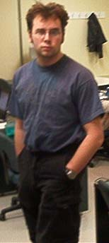

|
FULL NAME: Joseph Guy Marcel Paré
|
 |
If you ever want to do some modeling, you can ask me questions about 3Dsmax, which I use
for my models, about the stats, how they work, what are they, how to implement them in
the game. This way we can relieve Tiger-Shark(also known as HellCatV), the lead programmer
of much worries.